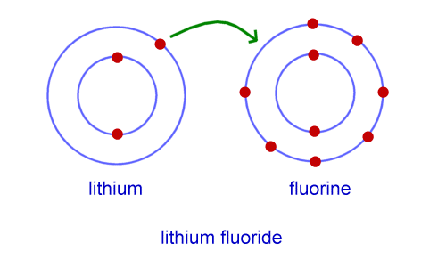
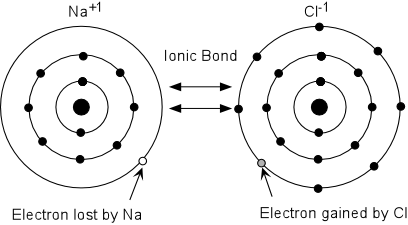
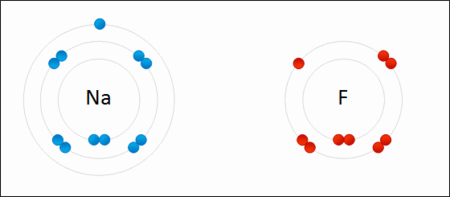

Quantum Thievery
Ionic bonds differ greatly from their covalent cousins. Ionic bonding constitues an event in which the outer atomic orbital of an atom has a vacant spot, capable of being filled by
one or more electrons from a foreign atom. These vacancies occupy a region closer to the nucleus than the other atom, and are thus experience higher attractive forces. When an atom holding such an orbital
nears closer to an atom with a loosely held electron, the latter moves to to the tighter-bound orbital. This is referred to as a redox reaction.
A Difference in Charge
The result of one atom "stealing" the electron of another for its' own needs is that said atom becomes negatively charged, while the atom whose electron has just transferred has been rendered positive.
The difference in charge allows both atoms to bond due to electrostatic attraction, and both atoms have become positively, or negatively, charged ions.
The Formation of Crystals
This extreme polarization in the ionic bond renders the newly-formed ionic compound without a certain direction in space, since they experience equal electrostatic attraction to surrounding ions.
Ionic bonds are very strong, yet the extent of this strength is limited to a short range. This results in the bonds requiring high amounts of energy to be broken, yet are themselves unable to
close cracks and are therefore brittle to impact. These characteristics are found in crystals of mineral salts, which ionic bonds tend to form often. An common example of a crystalline structure formed
by ionic bonds is table salt, composed of sodium and chlorine in an ionic bond.



Top-bottom: The aftermath of the ionic bonding of: sodium fluoride, sodium chloride, and lithium fluoride.
Sodim Chloride
Sodium Chloride, most commonly referred to as table salt, is used to salt roads in the process of de-icing, and to directly or indirectly create
more complex chemical compounds. Table salt is used as a preservative of foods, such as meats, fishes, and cabbage. The overly-salty hypertonic environment
drains water from cell membranes through osmosis, leading many harmful microorganisms to perish.
Salt is mass-produced by the evaporation of seawater and brine from salt-lakes and brine-wells, specifically made for the purpose of salt-harvesting. Another source of
the ionic compound is mining of rock salt.
China is the world's main supplier of salt, which itself is a byproduct of mining potassium. The substance has even been used as a cleansing agent since medieval times, with
some scientific-backing in the anti-microbial environment salt creates.